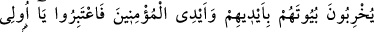

2. Ehl-i kitaptan inkâr edenleri, ilk sürgünde yurtlarından çıkaran O’dur. Siz
onların çıkacaklarını sanmamıştınız. Onlar da kalelerinin, kendilerini Allah’tan
koruyacağını sanmışlardı. Ama Allah (O’nun azâbı), onlara beklemedikleri yerden
geliverdi. O, yüreklerine korku düşürdü; öyle ki evlerini hem kendi elleriyle, hem
de müminlerin elleriyle harap ediyorlardı. Ey akıl sâhipleri! İbret alın.
“Ehl-i kitaptan inkâr edenleri, ilk sürgünde yurtlarından çıkaran O’dur.” Bu âyet-i
kerîme Cenab-ı Hakk’ın sonsuz kudretinin bazı eserlerini ve hikmetinin hükümlerini
açıklamaktadır. Zelîl kılma ve rüsva eyleme cihetiyle de yegâne ilâh O’dur. İşte o Allah,
Tevrat ehli olan Nadiroğullarının Medine’den çıkarılmasını emretti. Âyet-i kerîmede
geçen Diyâr kelimesi Dâr kelimesinin çoğuludur. Dâr ile beyt, her ikisi de ev anlamına
gelmesine rağmen aralarındaki fark şudur: Dâr kelimesi, duvarları yıkılsa da yine onun
yurt anlamı devam ettiği halde, beyt kelimesi duvarları yıkıldığı takdirde beyt olma
niteliği kalmaz. Çünkü beyt, içinde gece gündüz kalıp yaşamak için yapılmış, tavanı
bulunan bir tek yönden içine girilen bir binanın adıdır. Duvarları ister dört veya üç adet
olsun farketmez. Bu anlam, suffa kelimesi için de geçerlidir. Ancak onun girişi geniştir.
Bu sebeple beyt ismi ona da şâmildir. “Büyût” kelimesi mesken için özel isim, “ebyât”
(beyitler) kelimesi şiir içindir. “/Li evveli’l-haşr” deki lâm harfi ahrace fiiline
taalluk edip vakit anlamındadır. Yâni Şam’a ilk sürüldüklerinde, demektir.
Keşfü’l-esrar’da şöyle denilmiştir: “Li evveli” kelimesindeki lam sebep
bildirmektedir. Yâni Şam’a sürgünleri ilk sürgün olması için, demektir. Söz konusu
Haşr kelimesinin anlamı, bir topluluğu bir yerden çıkarıp başka bir yere sürmektir.
Nadiroğulları yurtlarından hiç sürülmemiş bir yahûdi kabilesiydi. Zira onların daha
önce Şam taraflarından Medine’ye gitmeleri kendi arzularıyla olmuştur. Dolayısıyla,
onlar Arap Yarımadası’ndan çıkarılıp Şam’a sürülen ilk toplulukturlar. Buna göre âyet-i
kerîmedeki evvel kelimesi, son anlamındaki âhir kelimesinin karşılığı anlamında
değildir. Arap Yarımadası’na Cezire adı verilmesinin sebebi, buranın Habeşe denizi,
Faris denizi, Dicle ve Fırat nehirleriyle çevrilmiş olmasıdır. Arap Yarımadası’nın
başlangıcı uzunluk itibariyle Ebû Musa çukurundan Yemen’e, İhsa karşısındaki Yebrîn
kumluğundan Şam ile Küfe arasındaki yer olan Semave’ye kadar genişlik itibariyle
uzanır.
Veya bu onların ilk sürgünleri olup, son sürgünleri de Hz. Ömer’in, kendisine,
Peygamberimiz (s.a.)’in, “Arab Yarımadası’nda İslâm dininden başka ikinci bir din
kalmayacaktır” buyurduğu haberi ulaşınca Yahûdileri Hayber’den Şam’a sürmüş